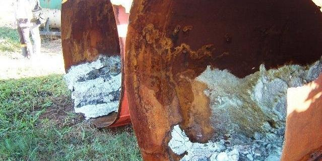
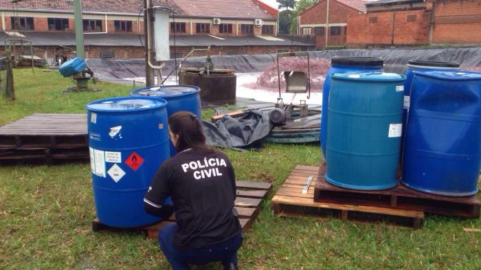

Diretora de empresa é presa por crime ambiental em Estância Velha
Fiscalização flagrou armazenamento irregular de embalagens com produtos químicos inflamáveis e corrosivos no local

A diretora de uma empresa de Estância Velha foi presa, nesta quarta-feira (17), em mais uma etapa da Operação Ambiente Saudável. A fiscalização, que ocorreu no bairro Industrial, flagrou uma empresa do ramo de tecidos vegetais e sintéticos potencialmente poluidora.
No local, foi identificado o armazenamento irregular de embalagens com produtos químicos inflamáveis e corrosivos.
Empresa em Araçariguama e remoção da fábrica da área residencial para o Distrito Industrial
Existe uma fabrica do ramo têxtil que tem sede no bairro da Terra Baixa em Araçariguama - SP. Há anos vem poluindo o ar com resíduos e partículas provenientes de seus processos de secagem e processamento de tecidos. Também polui um córrego que passa em frente a empresa, descartando água colorida provinda de seus processos produtivos.
A fuligem emitida por suas chaminés causam toses intensas, ardor nos olhos e mal estar na população atingida, chegando a ter dias onde a fuligem tem odor insuportável. Os bairros que mais sofrem com a poluição são: Terra Baixa, Vila Alumínio, Vila Nova, Vila Real, Jardim Brasil, Jardim Bela Vista, Chácara Dora. Para agravar mais a situação, esta empresa está localizada em frente a uma escola de ensino fundamental, a 300 metros de uma unidade de saúde, 400 metros de uma creche, 900 metros de um asilo e num raio que atinge boa parte das residências da área central e urbana da cidade.